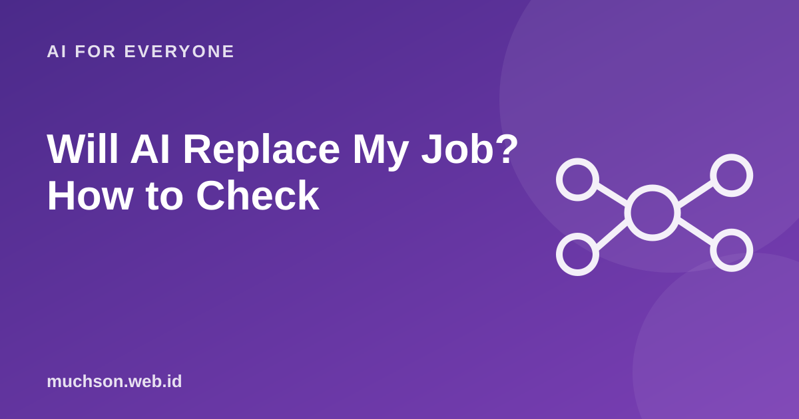

The fear of being replaced by AI is real, but the picture is more nuanced than either "everything disappears" or "nothing changes". What changes are the tasks inside a job. Knowing which tasks are exposed helps you prepare.
By Muhammad Muchson Attoyibi··1 min read

A job is made of tasks
A single job contains many tasks. AI usually takes over some of them, especially the repetitive, text-based ones with a clear pattern, while other tasks still need human judgement, empathy and accountability. That is why the impact differs from person to person, even within the same profession.
Figure 1. A rough map. Technology keeps moving, so review it from time to time.Text description of the diagram
Horizontal axis: Needs human judgement. Vertical axis: Easy to pattern and repeat.
Top left: Changing fast: Repetitive data entry, standard drafts, summaries
Top right: AI-assisted: Analysis with a human decision
Bottom left: Relatively safe: Varied physical work in the field
Bottom right: Safe and valuable: Negotiation, empathy, leadership, accountability
Check your task profile
A reasonable learning plan
Try an AI tool on your repetitive tasks over the next two weeks.
Learn how to ask well and how to check the results.
Strengthen the skills that are hard to replace: communication, analysis, judgement.
Understand your field more deeply, because checking AI takes knowledge.
Keep up with developments, but avoid panicking over headlines.
A helpful attitude
People who master AI tend to be more competitive than those who reject it entirely, and that holds across professions. Treat AI as a new tool, like the spreadsheet once was.
FAQ
Which jobs are the safest?
None are absolute. Jobs that need varied physical skills, empathy and direct responsibility are relatively harder to replace.
Is learning to code still worthwhile?
Yes, but the focus shifts to defining problems, designing, and checking AI-assisted code.
What if my company starts using AI?
Be the person who understands it. Volunteer to test it and oversee its output, because that is a skill in demand.
Share:
Muhammad Muchson AttoyibiSoftware engineer and academic trainer based in Malang, Indonesia. Writes about technology, learning, and practical everyday topics. About me